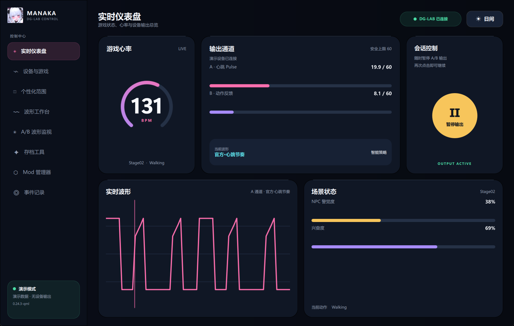
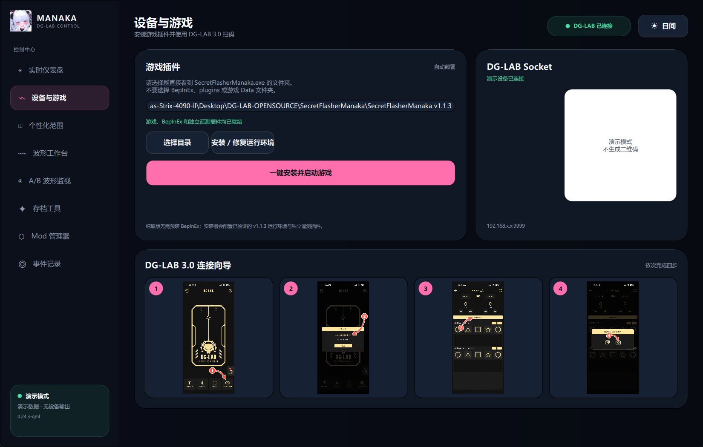
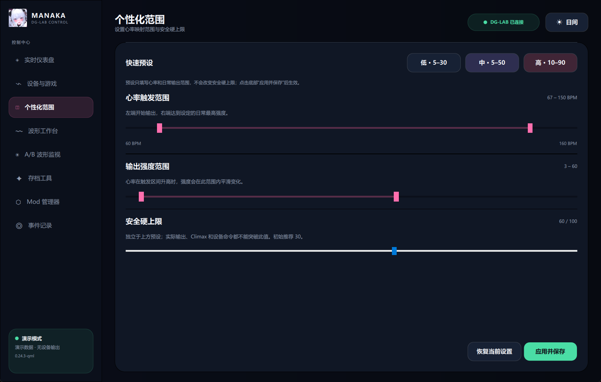
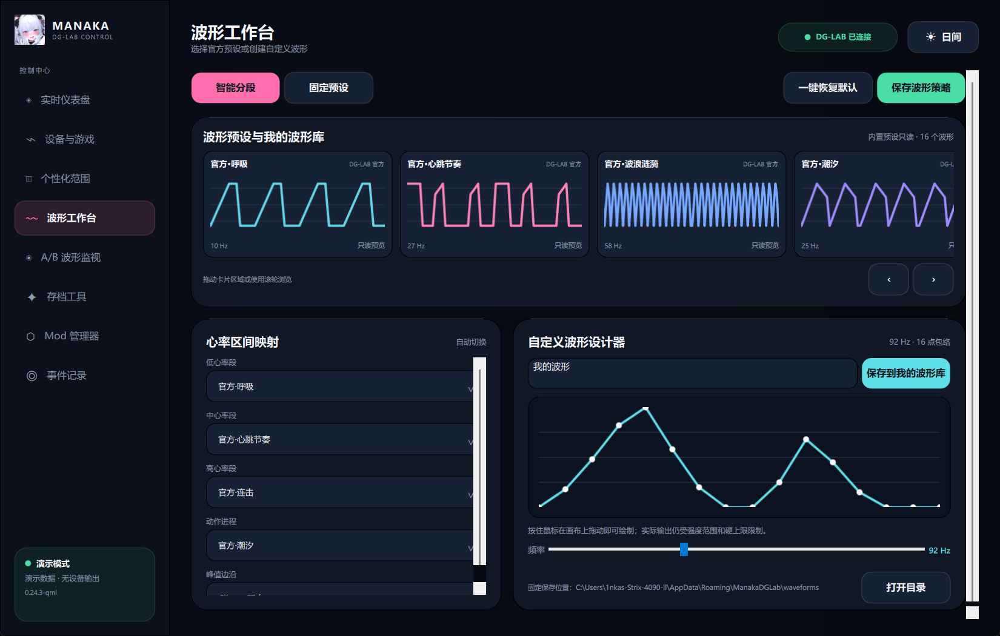
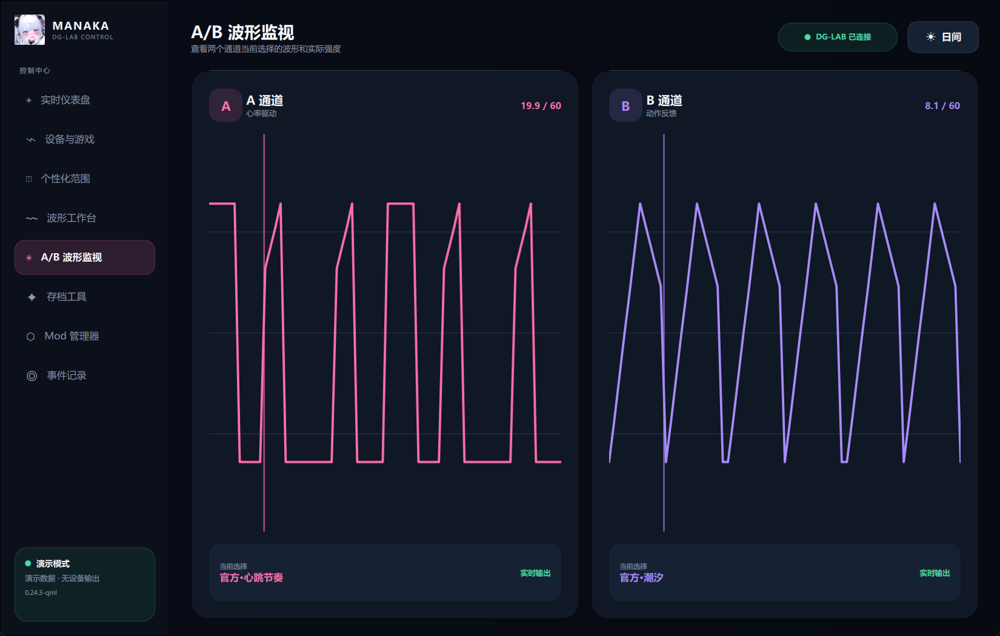
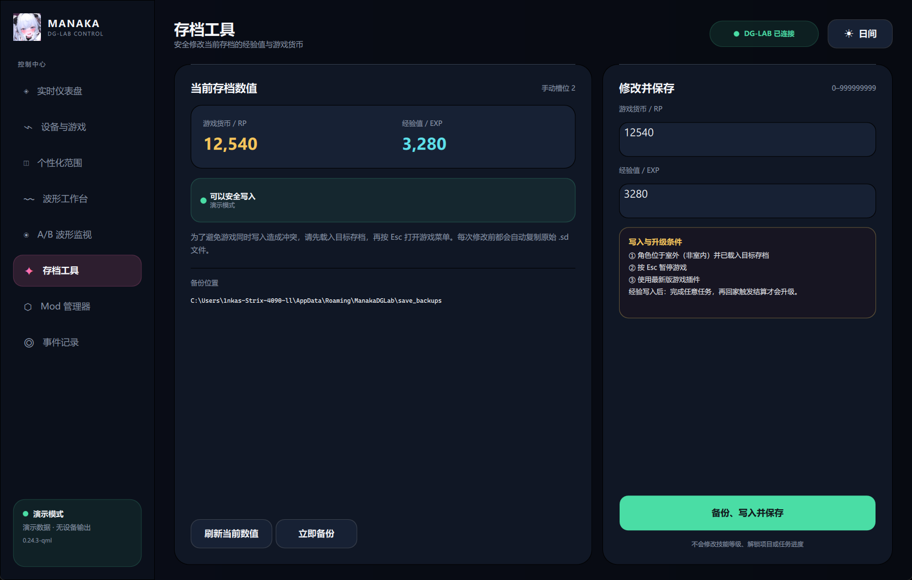
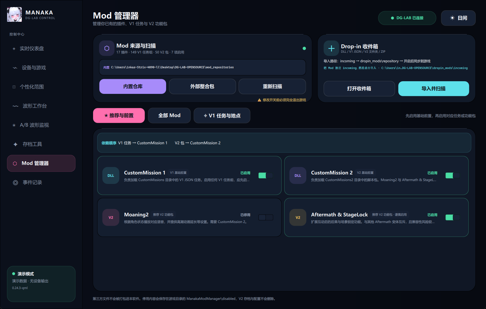
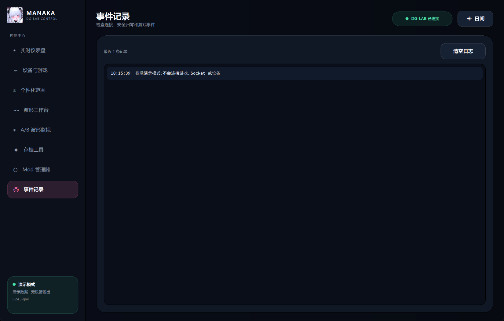

Windows · DG-LAB 3.0 · Secret Flasher Manaka
Manaka × DG-LAB
控制中心
连接 Manaka 与郊狼设备，把游戏心跳、动作和 Climax 事件同步到 A/B 通道。公开版不包含游戏本体，支持第三方 Mod 导入与管理。
核心功能
程序界面
以下均为当前版本的实际页面。
















支持与交流
遇到安装、连接或 Mod 问题，可以加入 QQ 群交流。喜欢这个项目，也可以请果果喝柠檬茶！

技术交流群
QQ群：1129729751

赞赏项目
感谢你对后续开发的支持